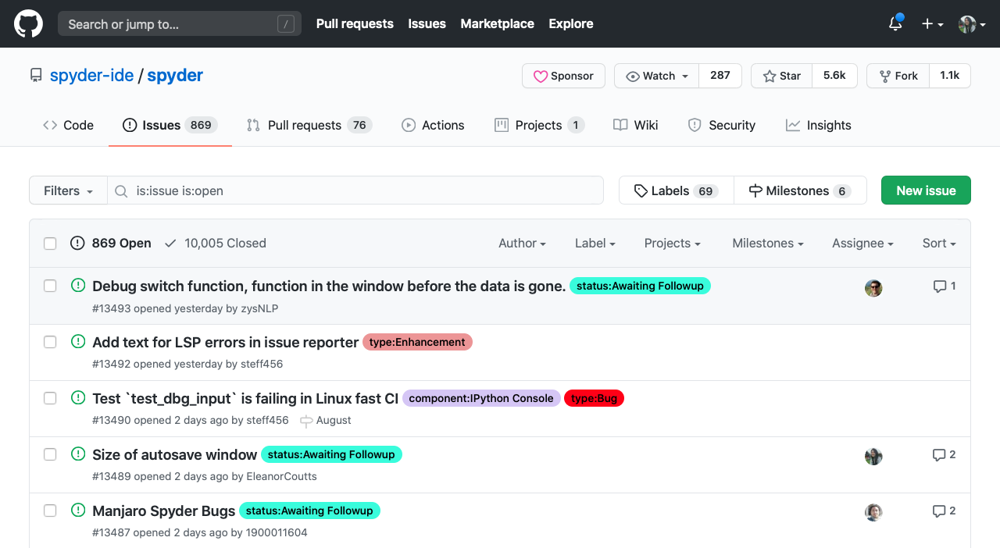
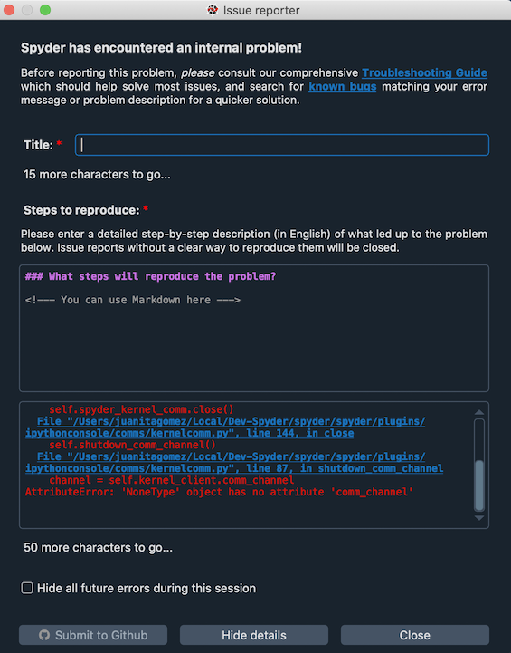
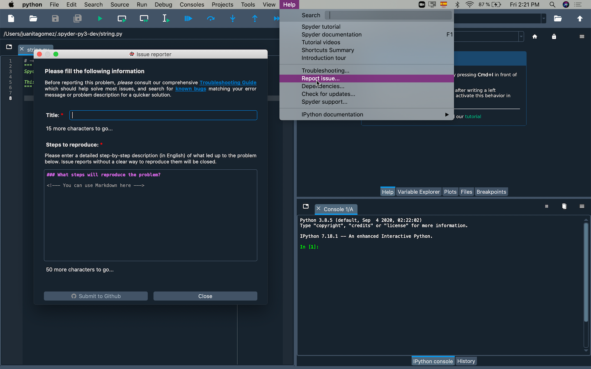
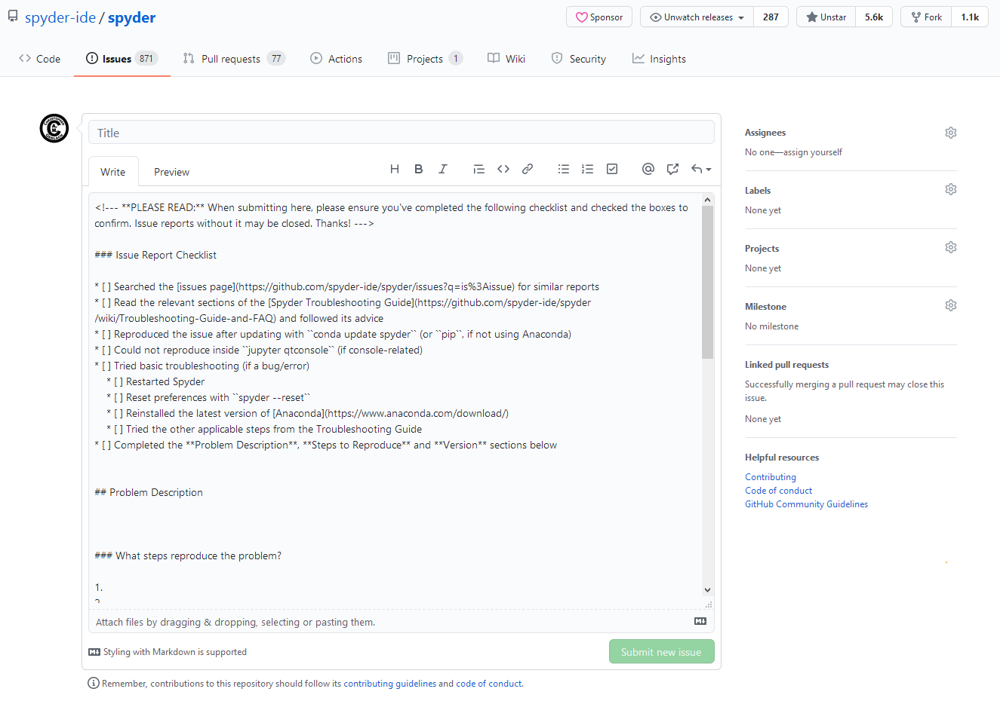
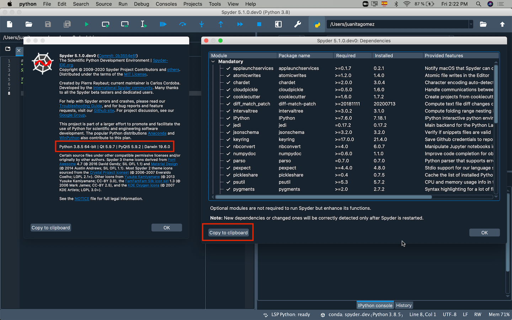
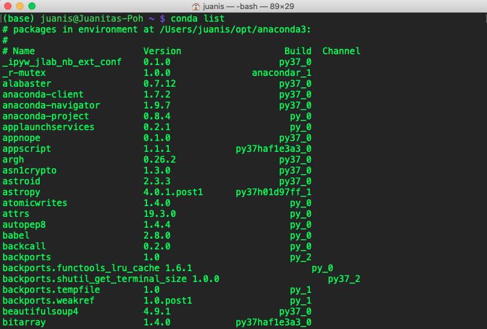

Enviar un reporte#
Si no puedes solucionar tu problema con ninguno de los pasos de solución de problemas, entonces querrás enviarlo a nuestro gestor de issues de GitHub para que nuestro equipo pueda echarle un vistazo por usted. Para hacer esto necesitarás una Github account, así que asegúrate de tener una antes de comenzar (una buena idea de todos modos).
Importante
Antes de enviar un issue, asegúrate de haber buscado una descripción del problema y una parte relevante del seguimiento de errores, tanto en Google como en el issue tracker de Spyder para asegurarte de que no ha sido enviado antes. Si ese es el caso, tu problema se cerrará como un duplicado.
Formas de enviar un issue#
Hay varias maneras de enviar un issue, ya sea desde Spyder o GitHub directamente. Por orden de preferencia y dificultad:
Si Spyder presenta un reporte de problemas puedes enviar un issue directamente desde él. Tendrás que llenar un título para tu petición, especificar los pasos que llevan a este problema y hacer clic en Enviar a Github. Esto prellenará un reporte de error con los detalles de tu entorno, las versiones claves y las dependencias, e insertará automáticamente el error o traceback por ti.
Si Spyder se abre y tu problema no implica un diálogo de error, la mejor manera de hacerlo es simplemente seleccionar Reporte de error en el menú Ayuda, que muestra manualmente el formulario de informe del problema y rellena la información clave sobre tu instalación de Spyder. Describe el problema que estás experimentando (incluyendo cualquier información de error/seguimiento) junto con un título descriptivo, y haz clic en Enviar a Github.
Si Spyder no se lanza, puedes enviar un informe manualmente en nuestra página de issues en Github. A diferencia de lo anterior, necesitarás proporcionar manualmente las versiones de todo (Spyder, Python, OS, Qt/PyQt, Anaconda y las dependencias de Spyder) como se muestra en la plantilla de informe de errores; ver abajo para más información sobre eso.

{kind=link}
Una vez que envíes tu informe, nuestro equipo intentará responderte lo antes posible, a menudo dentro de 24 horas o menos, para tratar de ayudarte a arreglarlo.
Qué incluir en tu informe#
Por favor, incluye la mayor cantidad posible de la siguiente información en tu informe para aumentar las posibilidades de obtener ayuda relevante y facilitar nuestra capacidad de diagnosticar, reproducir y resolver tu problema.
Los elementos clave, en orden de prioridad son:
El mensaje de error completo o el traceback copiado y pegado, o ingresado automáticamente, tal como aparece en Spyder:
Los informes autogenerados directamente desde el cuadro de diálogo de error deben incluir esto automáticamente, pero compruébalo dos veces para asegurarte.
Puedes copiar y pegar esto de la sección Mostrar detalles en el diálogo de error.
Si no está presente o no se muestra un diálogo, también puedes encontrarlo impreso en la Terminal interna de Spyder, ubicada en el menú Ver en .
Si lo prefieres, o si Spyder no se inicia, puede iniciar Spyder desde tu línea de comandos (o Anaconda Prompt en Windows) con
spydery copiar la salida impresa allí.
Nota
Si estás reportando un comportamiento específico en lugar de un error, o el mensaje no explica completamente lo que ocurre, por favor describe en detalle lo que realmente ocurrió, y lo que esperabas que Spyder hiciera.
Una descripción detallada y paso a paso de exactamente lo que hiciste antes de que ocurriera el error, incluyendo código de ejemplo que lo provoque, si es aplicable.
Información sobre Spyder y su entorno tal y como se indica en la plantilla de reporte de errores, que puedes encontrar bajo Acerca de Spyder en el menú Ayuda; junto con sus dependencias clave, mostradas en el diálogo (hay un botón para copiarlas).
Si Spyder no se lanza, pega la salida de
lista condadesde tu línea de comandos (o Anaconda Prompt en Windows) en la sección Dependencias de la plantilla de incidencias.Cómo instalaste Spyder y cualquier otro paquete relevante, por ejemplo Anaconda, MacPorts o pip y si Spyder ha funcionado antes desde que lo instalaste.
Qué más intentaste para solucionarlo, por ejemplo, siguiendo esta guía o buscando en otros sitios web, y si has intentado reproducir el problema en una QtConsole independiente, IPython, y/o el intérprete de Python simple.
Si el problema ha ocurrido de manera consistente en situaciones similares o si es la primera vez que lo observas.
Cualquier otra cosa especial o inusual sobre tu sistema, entorno, paquetes o uso específico que pueda tener algo que ver con el problema
{kind=link}
Truco
Si incluyes bloque(s) de código en tu informe, asegúrate de precederlos y seguirlos con una línea de tres comillas invertidas ``` para obtener un bloque de código como este:
print("Your Code Here!")
De lo contrario, es probable que tu código contenga un formato aleatorio o falta de indentación, lo que dificultará examinarlo y ejecutarlo para reproducir y solucionar tu problema.